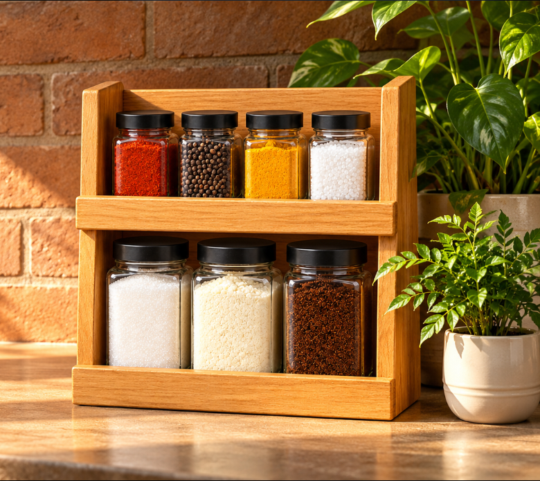

01 · Monitor ingredient stock
Know what’s left.
Estimate how much remains in each bottle, receive low-stock alerts, and plan household shopping and refills.
Introducing The Rack
GamMiris The Rack brings organized spice storage and simple digital insights together. Monitor ingredient stock, plan refills, and review household salt and sugar usage trends—all from one smart kitchen organizer.

What is the purpose of GamMiris The Rack?
01 · Monitor ingredient stock
Estimate how much remains in each bottle, receive low-stock alerts, and plan household shopping and refills.
02 · Support health-conscious habits
Review estimated salt and sugar removed from household containers and usage trends over time. Set, adjust, or pause voluntary household goals, with optional goal locking and an authorized override.
Designed around everyday cooking
The Rack brings practical storage together with the idea of knowing what you have and what needs topping up.
01
Estimates remaining stock for seven ingredients: Chili, Pepper, Turmeric, Salt, Sugar, Milk Powder, and Coffee.
02
Choose a minimum level for each ingredient and see when it is running low.
03
Keep track of ingredients that need to be purchased.
04
Update refills to keep estimated stock information current.
05
Review trends based on estimated amounts removed from the household containers.
06
Choose household goals that you can adjust or pause.
07
Support your household’s chosen goals with optional locking and an authorized override.
The idea in three steps
The planned experience connects physical weighing platforms to a digital inventory, so the useful information is easy to find when you need it.
Each bottle sits on its assigned weighing platform in the organizer.
The sensor reading is handled by the ESP32 and intended to sync with the companion app through Wi-Fi and Firebase.
See quantities, monitor your chosen minimum levels, and plan what to add to your shopping list.
A few useful details
The Rack is being developed as a project concept. These notes explain the intended approach.
Chili, Pepper, Turmeric, Salt, Sugar, Milk Powder, and Coffee.
Estimated amounts removed from the household containers. These are household usage trends and do not measure any individual’s intake.
Yes. Usage goals are voluntary and adjustable. Optional locking and authorized override support the household’s chosen goals.
A Gammiris idea